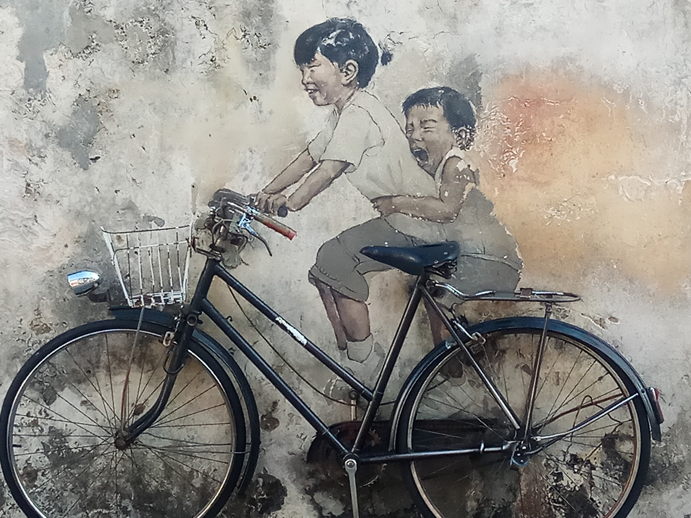
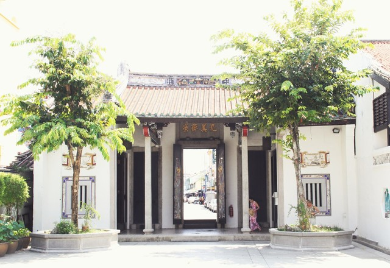
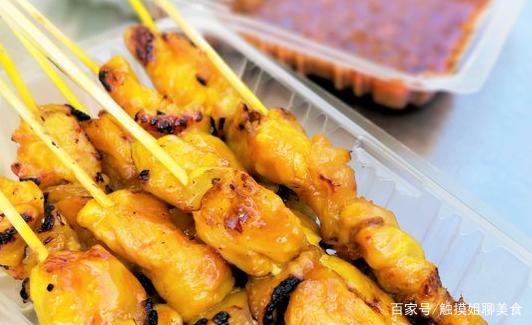
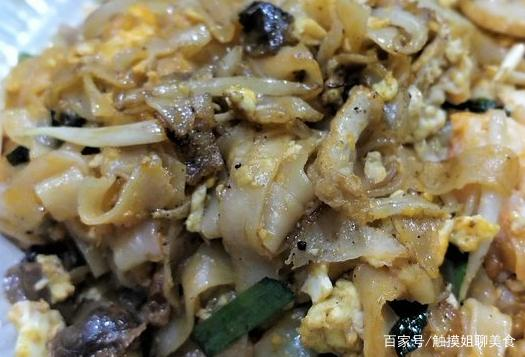
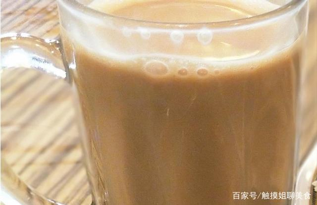

槟城之旅
何为东方之珠？您的探索之旅，发现新大陆的冒险故事！
槟城，亦称槟州，是马来西亚十三个联邦州属之一，位于马来亚半岛西北侧。以槟威海峡為界，槟城分成槟岛和威省两部分，其中威省的东部和北部与吉打州为邻，南部与霹雳州为邻，而槟岛西部则与印尼苏门答腊岛隔马六甲海峡相对。
我最喜欢的三个景点，人气目的地推荐。
猴子沙滩
壁画街

潮州会馆

我最喜欢的三种美食，忘不了的佳肴美食。
沙嗲，又名沙嗲串燒、沙嗲串，是一種東南亞的烤肉串，通常肉以醬汁先醃過再烤。沙嗲的食材可能是切片或切塊的雞肉、羊肉、牛肉、魚，其它肉類，或豆腐。
沙嗲雖然經常使用竹籤串肉，但比較正統的是以椰子樹葉的梗串肉。沙嗲通常以木材或木炭烤，然後吃時可以再加上各種辛辣的沙嗲醬調味。

炒粿條常见于广东潮汕地区，其做法與廣府人的干炒河基本雷同,加入蛋、血蚶、豆芽、臘腸、蝦子、黑醬油，炒得色深味濃。在潮汕一帶，蚶是錢的象徵，有開枝
散葉、榮華富貴之意，潮州人習慣將血蚶用開水燙熟，搭配魚露而食。但在馬來半島的赤道氣候中，食物保存不易，加上移居檳城的潮汕人士改变口味，利用家鄉
慣有的食材，再加上黑醬油及辣椒醬，炒出具有檳城特色的炒粿條粿条拉茶拉茶是马来西亚人民所独创。

拉茶其实就是奶茶，马来西亚人称为：“飞茶”。拉茶起源自移民至马来西亚的印度人。拉茶是用两个杯子拉来拉去，拉得越长，起泡越多，味道就会好。并且是人
们最喜爱和饮用最普遍的含茶饮料。

地表最强，最受欢迎的体验项目。
橡胶艇
来之前，到之后的最匪夷所思的大差异是。。。？
只有我家乡1/60的面积，却有着我家乡1/4的人口。